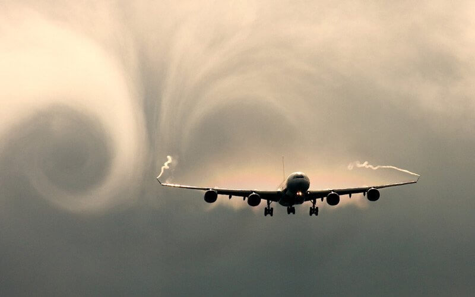
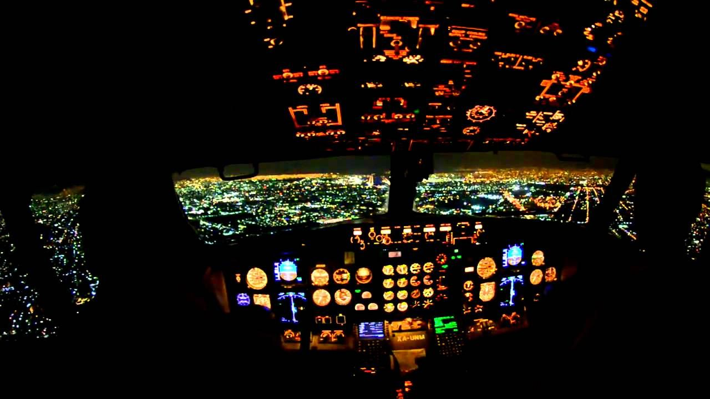
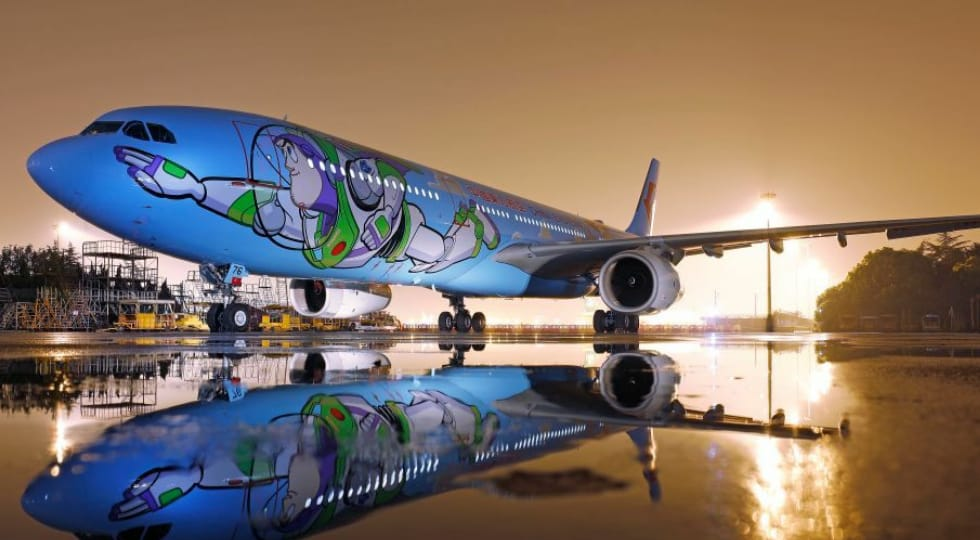
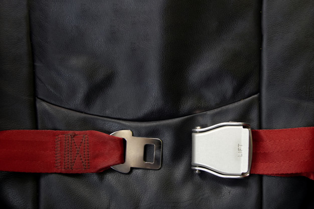
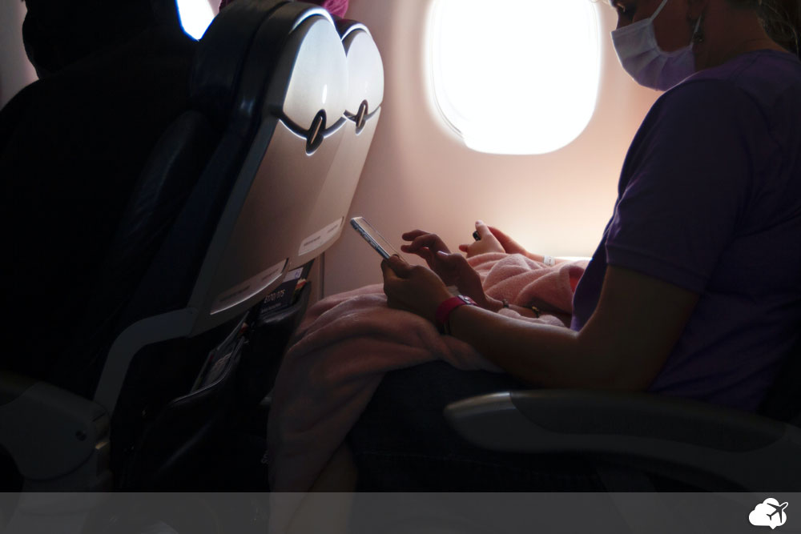

Segundo Dan Guzzo, piloto de formação e gerente de segurança operacional da Gol, turbulência não derruba avião. “As aeronaves são construídas com materiais
extremamente resistentes e desenvolvidos para suportar forças muito maiores do que as de uma turbulência. Portanto, é impossível que asas ou qualquer outra
parte da fuselagem sofram avarias em áreas de forte instabilidade”, afirma ele. “E as aeronaves comerciais são dotadas de radares meteorológicos que nos
permitem desviar de turbulência”.
Diretor de segurança operacional da Azul, o comandante Ivan Carvalho conta que também existem as chamadas “áreas de turbulências de céu claro”, que nem sempre
são detectadas pelos radares. “É uma turbulência mais imprevisível, mas que é facilmente transposta pela aeronave. Neste momento, a grande preocupação que o piloto
tem é com os passageiros, que podem sofrer desconforto ou se chocar com algo durante a turbulência. Por isso é fundamental estar com o cinto de segurança afivelado
durante toda a viagem”.

“No treinamento dado aos pilotos existe um módulo chamado'incapacitação de tripulante', que nos ensina a lidar com este tipo de situação”, conta o comandante Ivan Carvalho,
da Azul. “Se o comandante tiver um mal súbito no meio de um voo, a primeira coisa que deve ser feita é afastá-lo do posto de controle e providenciar um atendimento médico.
Isso, porém, não traz insegurança ao voo, pois o copiloto está preparado para assumir imediatamente o avião e continuar com a viagem sem riscos. Nunca pode haver uma só pessoa
na cabine do comandante. Sempre haverá outro profissional capaz de assumir o avião em casos de emergência”.
Carvalho também ressalta que, em voos acima de 11 horas, sempre haverá um terceiro piloto a bordo da aeronave. Ele ainda afirma que estes profissionais se submetem a exames
de saúde constantemente. “Nós passamos por pelo menos uma avaliação de saúde por ano. Dependendo a idade do piloto, estes exames são realizados a cada seis meses”.

Sim. Atualmente, os aviões têm uma tecnologia que garante um altíssimo nível de segurança. Como diz Dan Guzzo, muitas das partes de uma aeronave são duplicadas,
o que diminui, e muito, a chance de algo dar errado em um voo. Os aviões comerciais, por exemplo, têm pelo menos dois motores e, caso um deles sofra uma pane, a
aeronave consegue continuar voando até realizar um pouso com segurança. Existem também dois sistemas elétricos e, se um deles falhar, o outro consegue manter a operação do voo.

O número de fatalidades que ocorrem devido a acidentes com aviões é drasticamente menor do que os que ocorrem com carros. Para se ter uma ideia, em uma pesquisa realizada nos Estados Unidos
pela Administração Nacional de Segurança no Tráfego Rodoviário no ano de 2008, ocorreram 1,27 fatalidades para cada 100 milhões de veículos.
No mesmo período, foram registrados 20 acidentes aéreos com aviões americanos. De acordo com as estatísticas, é mais provável alguém morrer enquanto está indo para o aeroporto do que dentro de um avião.

Risco de contágio no avião é de 1 em 27 milhões.
A IATA tem acompanhado desde o início deste ano os registros de transmissão de Covid-19 associada à viagem de avião.
Dessa forma, identificou 44 casos (considerando confirmados, prováveis e potenciais) entre os 1,2 bilhão de passageiros que viajaram no período.
Diante da baixíssima incidência de contágio, a entidade concluiu que é seguro voar durante a pandemia.
O Departamento de Defesa dos EUA realizou uma série de testes em aeronaves comerciais da United Airlines.
O objetivo foi identificar o tempo de exposição dos passageiros ao coronavírus, na hipótese de haver alguém infectado e liberando o vírus no ar constantemente.
Os pesquisadores liberaram centenas de doses de aerossol no avião, simulando partículas infecciosas, e mediram o tempo que ficavam no ar.
Como esperado, por meio do sistema de circulação de ar, os filtros eliminaram as partículas rapidamente, em menos de 6 minutos.
Isso é 15 vezes mais rápido que um sistema de ventilação doméstico comum e 5 vezes mais veloz que o recomendado em salas de operação de hospitais.
